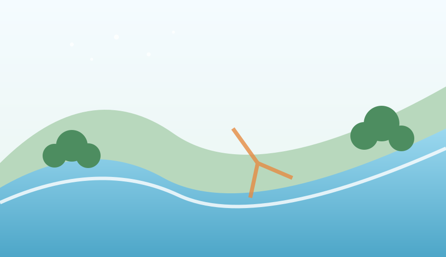

01
Observe the land
Drishti-Cam, soil, NDVI and LiDAR readings build a live land profile.
Early warning, ecological intelligence & precision afforestation
A simple visual overview of how BHOOMI-Net observes, understands and responds.
Drishti-Cam, soil, NDVI and LiDAR readings build a live land profile.

Flood, wildfire and landslide scenarios show how risk can develop.
AI zones the terrain, recommends species and plots planting points.
Sensor fusion integrates optical computer vision, hydrologic soil probes, spectral NDVI, and LiDAR topography to calculate empirical risk vectors.
When risk indices cross critical thresholds, BHOOMI-Net automatically routes directly to the AI Afforestation Engine.
Use this dedicated response workspace to see the exact simulated fire location, affected-area occupancy, public warning, officer notification and responder route.
Extensive lateral root network mechanically armors alluvial banks against high water velocity.
Dense fibrous rhizome system binds topsoil along erosion gully discharge points.
Taproot penetrates 4–8m into fractured bedrock, anchoring slope shear planes.
Dense vegetative contour hedges intercept overland runoff and trap sediment.
Broadleaf thick foliage retains canopy humidity and resists radiant heat transfer.
High foliar water content suppresses spot fires along the northern reserve boundary.
The AI optimizer applies geospatial exclusion constraints to prevent planting in counterproductive locations:
| Zone | Area | Recommended Species | Spacing | Estimated Count |
|---|---|---|---|---|
| Zone 1: Waterfront | 2.2 ha (22%) | Arjuna (Terminalia arjuna) & Bamboo | 3.5 m | ~1,450 trees |
| Zone 2: Hillside | 5.2 ha (52%) | Deep-Root Neem, Jamun & Vetiver Hedges | 4.5 m | ~2,400 trees |
| Zone 3: Ridge / Fringe | 2.6 ha (26%) | Mahua (Madhuca longifolia) & Sal | 5.5 m | ~1,000 trees |
| Plant ID | Coordinates | Zone | Species | Spacing | Status |
|---|